Activity: Deformation Features
Click here to download the activity files.
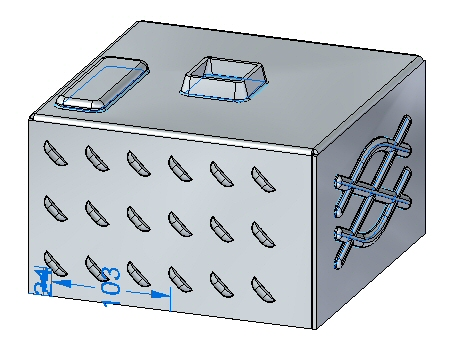
Objectives
This activity demonstrates how to place and manipulate and edit deformation features and feature origins within a sheet metal part. In this activity you will:
-
Place deformation features such as louvers, beads, dimples, drawn cutouts, beads and gussets.
-
Pattern a deformation feature.
-
Show, hide and move the feature origin of a deformation feature.
-
Edit the values of a deformation feature.
Start Solid Edge 2023.
Open deformation_activity.psm.
This sheet metal part was created with a material thickness of 3.50 mm and a bend radius of 1.00 mm.
On the File menu, click Save As → Save As.
On the Save As dialog box, in the File box, save the part to a new name or location so that other users can complete this activity.
Select the Home→Sheet Metal→Dimple→Louver command .
Click the Louver options button on the command bar.
The louver depth cannot be greater than half the louver length. The louver height cannot be greater than the material thickness.
Enter the following values:
-
Type: Formed-end louver
-
Length: 25.00 mm
-
Depth: 8:00 mm
-
Height: 4.00 mm
-
Turn on rounding and set the die radius to 0.88 mm.
Click OK.
Move the cursor over the front face and observe the behavior.
The length of the louver is parallel with an edge the plane that the cursor is positioned over. The N (next) and B (back) keys can be used to cycle through the plane edges. The louver will orient itself to be parallel to the edge displayed. When the desired orientation is achieved, the F3 key will lock the louver to that plane and in the orientation chosen.
Orient the louver as shown by entering N as needed. Once the orientation is established, click F3 to lock to the face and orientation.
Once the plane and orientation have been set the louver can be positioned with a left mouse click, or by using dimensions to precisely locate the louver. In the next step, the louver will be located using dimensions.
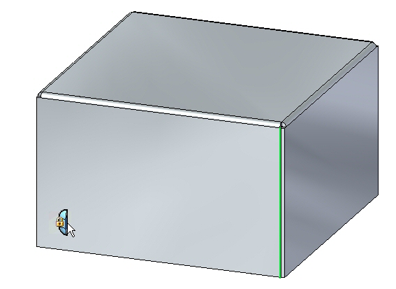
Move the cursor over the edge shown below and press the E key.
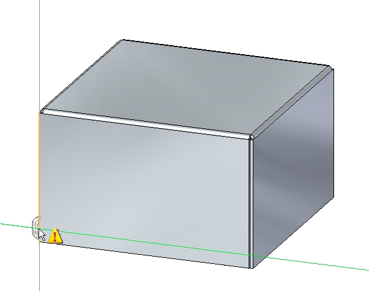
To position using dimensions, entering the character E dimensions from the endpoint of an edge and entering the character M dimensions from the midpoint of an edge.
Move the cursor over the edge shown below and press the M key.
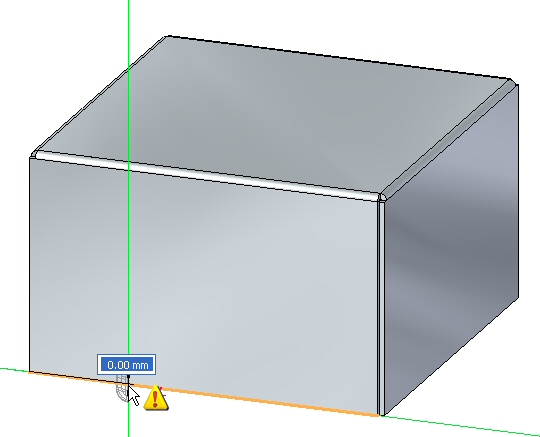
Notice the dimension originating from the end of the previous edge chosen.
Without clicking the mouse, move the cursor to the approximate position shown below.
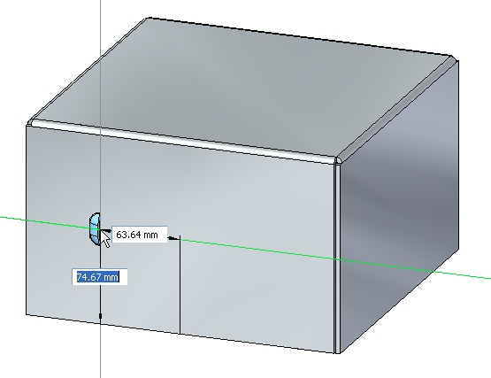
For the horizontal dimension value enter 95.00 mm, and for the vertical dimension value enter 24.00 mm as shown. Use the Tab key to toggle between fields, then press Enter.
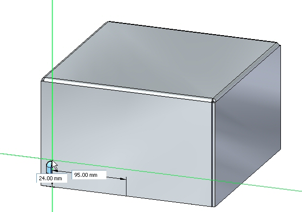
The louver is placed.
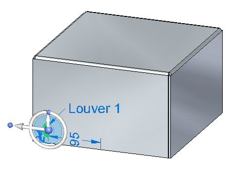
The origin of a feature is called the feature origin, and is also referred to as the strike point for manufacturing purposes and which can be shown and detailed in Solid Edge Draft. The feature origin can be offset upon creation, or offset after placement. The feature origin can also be used to apply a rotation angle to a rigid procedural feature such as a louver. In the following steps, the feature origin of the louver just created will be moved and rotated.
In PathFinder right-click the louver entry and select Show Feature Origin.
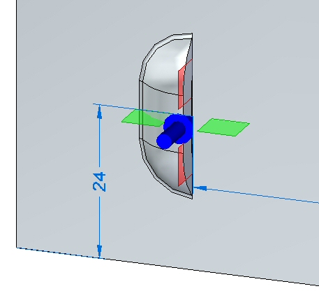
The feature origin appears.
Click the louver feature in PathFinder. When displayed, click the edit handle as shown.
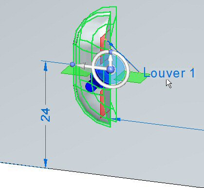
Click the Louver Options button. Change the Y value of the feature origin offset to 8.00 mm, then click OK.
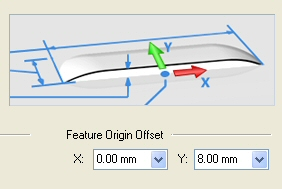
The feature origin changes position.
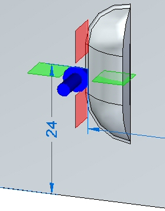
Notice that only the feature origin changed position. The louver is still located in the same position.
Select the louver, then select the torus of the steering wheel.
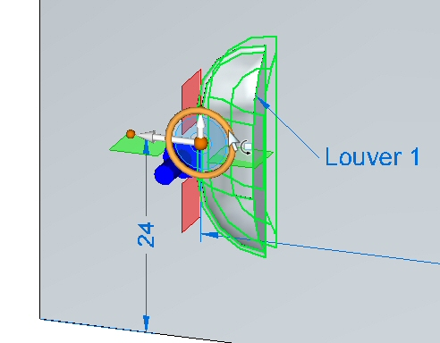
Rotate the louver 45o as shown.
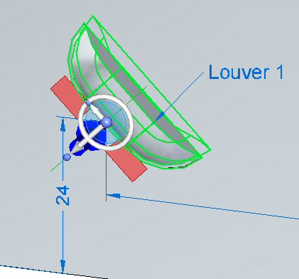
The louver has been rotated about the feature origin. Right-click the louver in PathFinder and hide the feature origin.
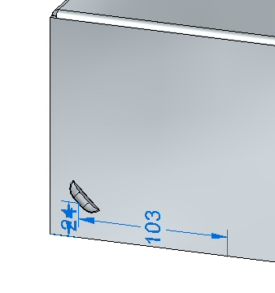
Select the louver in PathFinder and then click the Home→Pattern→Rectangular Pattern command
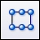
.When selecting a reference plane for the pattern, press F3 to lock to the appropriate plane.
Set the pattern parameters as follows:
-
Type: Fit
-
X count: 6
-
Y count: 3
-
Vertical distance: 95.00 mm.
-
Horizontal distance: 180.00 mm.
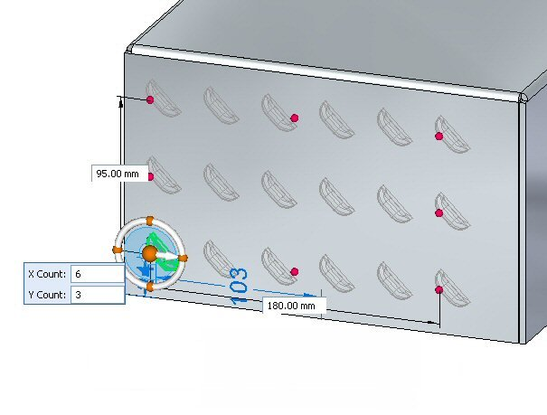
Click the Accept button to finish creating the rectangular pattern.
Beads are added to sheet metal parts as stiffeners.
In PathFinder, display the sketch named Beads.
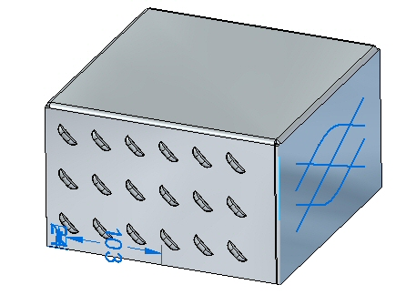
Click the Home→Sheet Metal→Dimple→Bead command .
Click the Bead Options button .
Set the following options:
-
Cross section: U-Shaped.
-
Height: 4.00 mm.
-
Width: 3.50 mm.
-
Angle: 20o.
-
End Condition: Formed.
-
Include rounding with a punch radius of 0.50 mm, and a die radius of 0.50 mm.
-
Click OK.
Select all the elements in the sketch as shown.
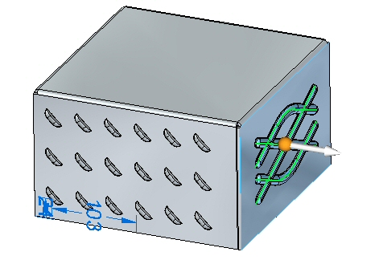
Clicking the arrow will reverse the direction of the beads.
Right mouse click to accept the beads. The beads are created.
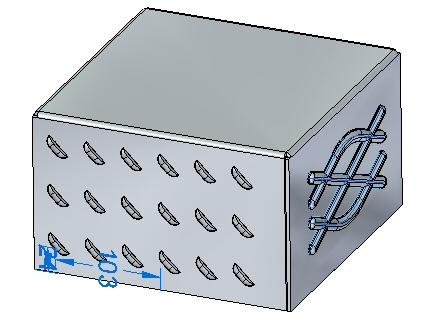
In this step you will place a dimple and a drawn cutout from a two different sketches.
In PathFinder, display the sketch named Drawn.
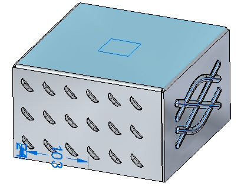
Click the Home→Sheet Metal→Dimple→Drawn Cutout command .
Click the Drawn Cutout Options command .
Set the following options:
-
Taper angle: 15o.
-
Include rounding: die radius 1.75 mm.
-
Include punch side corner radius: 1.75 mm..
-
Click OK.
Select the region shown.
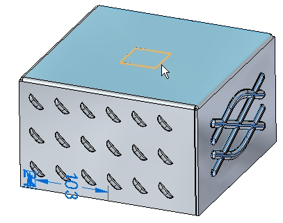
Enter a distance of 15.00 mm.
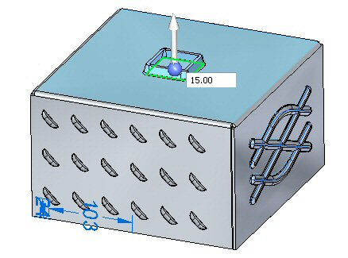
Clicking the arrow will reverse the direction of the drawn cutout.
Right mouse click to accept the drawn cutout. The drawn cutout is created.
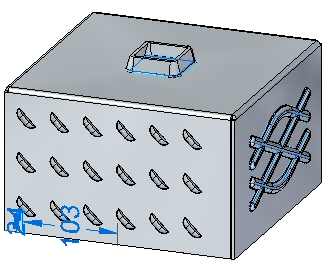
In PathFinder, display the sketch named Dimple.
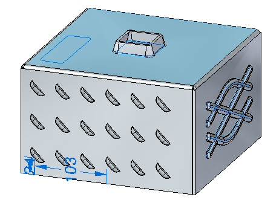
Click the Home→Sheet Metal→Dimple command  .
.
Click the Dimple Options button .
Observe the options, but do not change any of the options.
Change the Profile Represents Punch as shown
Select the regions shown.
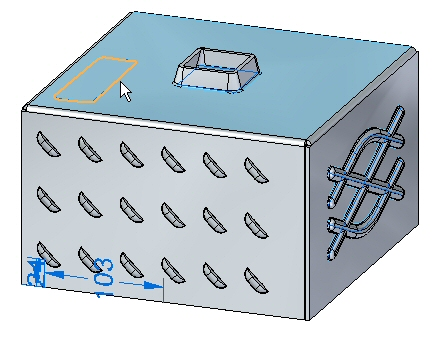
Enter a distance of 8.00 mm.
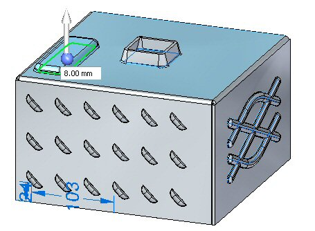
Clicking the arrow will reverse the direction of the dimple.
Right-click to accept the dimple. The dimple is created.
In this step you will edit the bead feature created in an earlier step.
In PathFinder, select the bead feature. Click the edit handle to edit the feature.
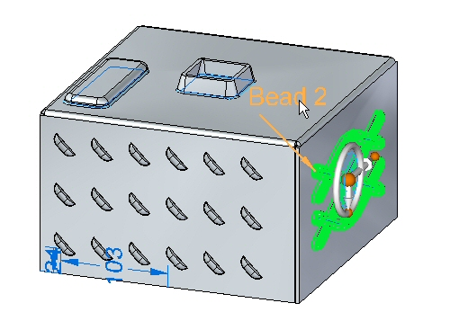
Click the Edit Profile Handle.
Select the line shown.
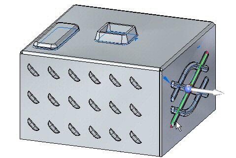
Drag the endpoint of the line to a new position. Close the sketch profile and right-click.
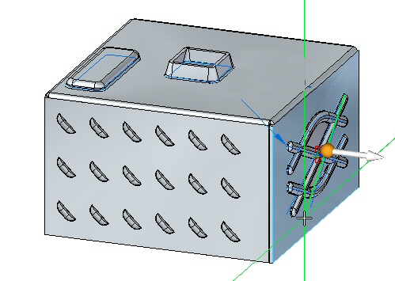
The deformation feature has been edited.
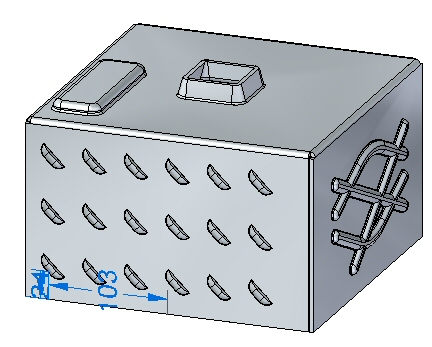
When editing a rigid procedural feature, the sketch used to create the feature remains a part of the feature and can be modified at a later time.
Save and close the sheet metal document.
In this step you will place gussets between two thickness faces.
Open gusset_activity.psm.
Click the Home→Sheet Metal→Dimple→Gusset command
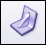
.Click the Gusset Options button .
Set the following parameters:
-
Depth: 11.25 mm.
-
Include rounding with the both the Punch radius and Die radius being 1.50 mm.
-
Gusset Shape: Round.
-
Width: 9.00 mm.
-
Click OK.
Set the Gusset Patterning parameter to Single.
Select the bend shown.
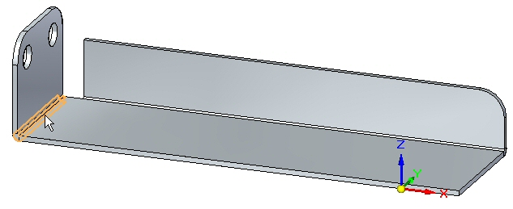
Click the midpoint shown to place the gusset.
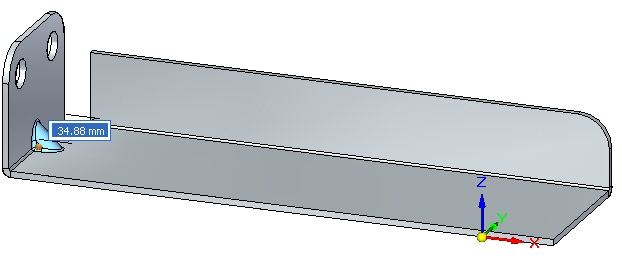
Right-click to complete the placement. The gusset is placed.
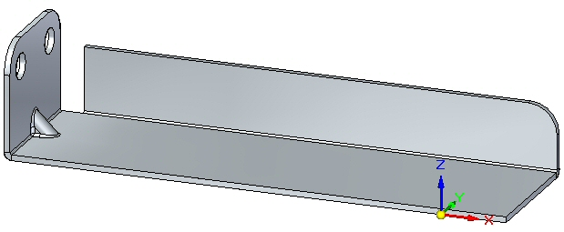
In this step you will rotate a face containing a gusset and observe how the gusset responds.
Click the Select tool and select the face shown.
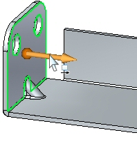
Move the steering wheel to the bend as shown and select the torus so as to rotate the face.
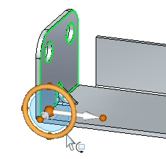
Enter an angle of 30o as shown.
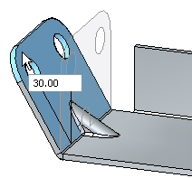
The result is as shown.
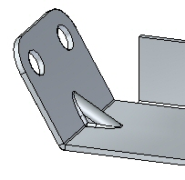
The gusset is an adaptive procedural feature that will change shape to as the angle between the faces changes.
In this step you will place multiple gussets along a bend.
Click the Home→Sheet Metal→Dimple→Gusset command .
Click the Gusset Options button .
Set the following parameters:
-
Depth: 11.25 mm.
-
Include rounding with the both the Punch radius and Die radius being 1.50 mm.
-
Gusset Shape: Round.
-
Width: 9.00 mm.
-
Click OK.
Set the gusset patterning parameter to fit.
Select the bend shown.
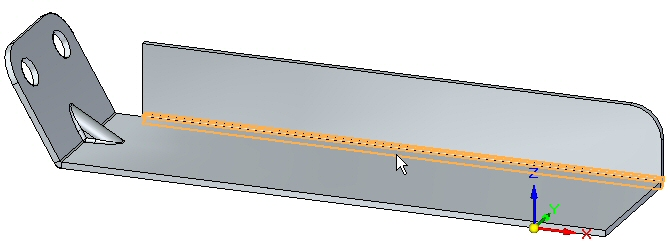
Set the count to 8. Observe the results.
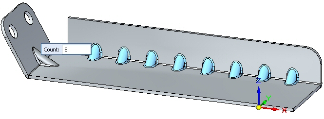
Set the pattern type to fill. Observe the results.
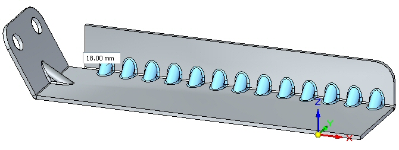
Set the pattern type to fixed. Set the count to 10 and the distance to 22.00 mm.
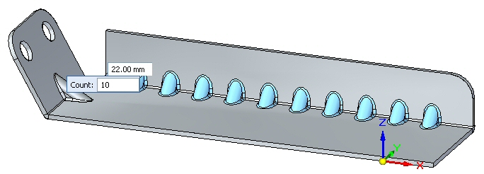
Right-click to complete the gusset pattern. Observe the results.
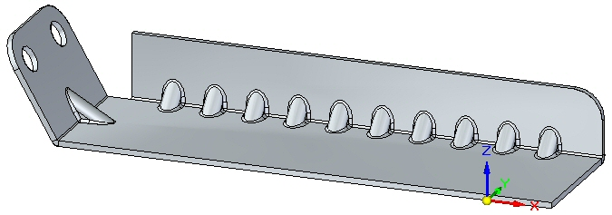
Save and close the sheet metal document. This concludes this activity.
In this activity you created a variety of deformation features. The feature origin for a rigid procedural feature was displayed and moved to a new location. The feature was rotated. Multiple occurrences where created with the pattern command.
Click the Close button in the upper - right corner of this activity window.
Answer the following questions:
-
What is the definition of a deformation feature?
-
What is the difference between a drawn cutout and a dimple?